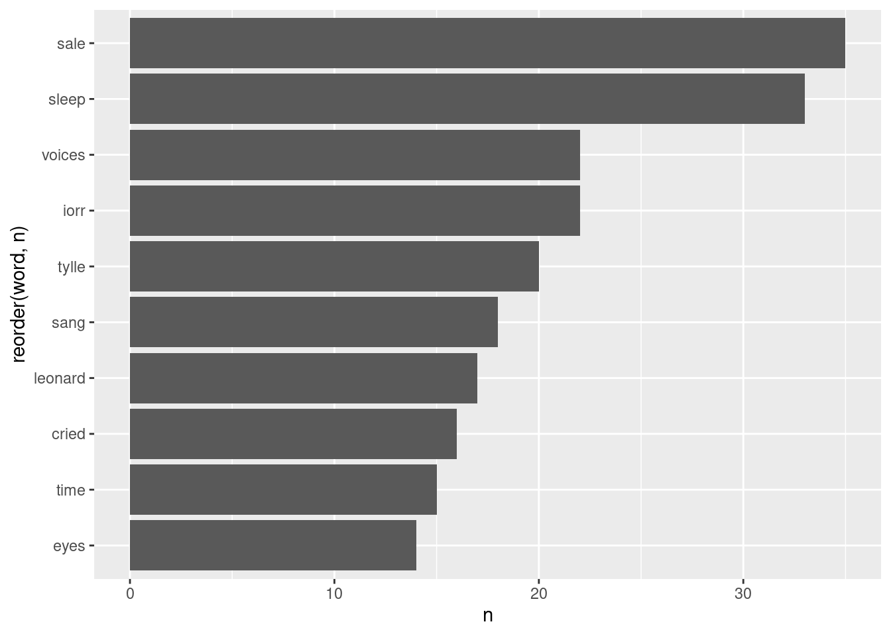
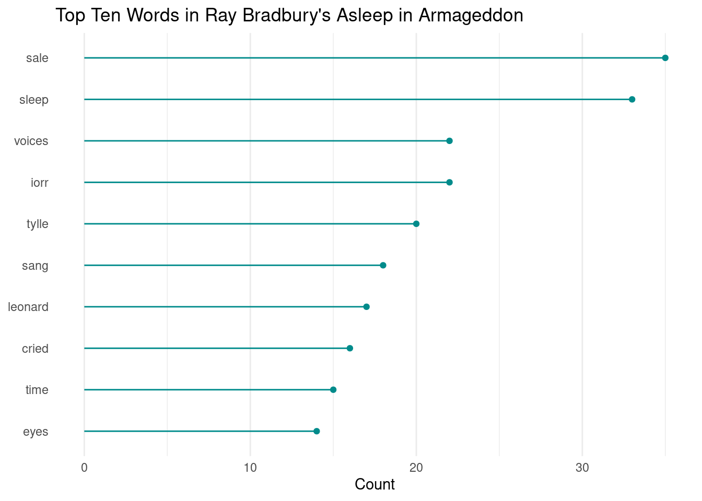

library(gutenbergr) # access public domain texts from Project Gutenberg
library(tidytext) # text mining using tidy tools
library(dplyr) # wrangle data
library(ggplot2) # plot dataLearning Objectives
- Describe principles of tidy text
- Employ strategies to wrangle unstructured text data into a tidy format using the
tidytextpackage - Become familiar with text analysis (or text mining) methods and when to use them
Acknowledgements
This lesson has been adapted from the following resources:
- Welcome to Text Mining with R by Julia Silge and David Robinson. Julia and David are also the developers of the
tidytextpackage. - Section 7.3: (R-) Workflow for Text Analysis from Computational Social Science: Theory & Application, Version: 17 June, 2021 by Paul C. Bauer
12.1 What is text data?
Text data is information stored as character or string data types. It comes in various different forms including books, emails, social media posts, interview transcripts, newspapers, government reports, and much more.
12.1.1 How do we talk about text data?
Here is a list of text data or text analysis terms we’ll be referring to throughout this lesson. Note this is not a comprehensive list of text analysis terms that are used beyond this lesson.
| Term | Definition |
|---|---|
| Corpus (corpora, plural) | Collection or database of text or multiple texts. These types of objects typically contain raw strings annotated with additional metadata and details. |
| Document-term matrix | Represents the relationship between terms and documents, where each row stands for a term and each column for a document, and an entry is the number of occurrences of the term in the document. |
| Natural Language Processing (NLP) | NLP is an interdisciplinary field used in computer science, data science, linguistics, and others to analyze, categorize, and work with computerized text. |
| String | Specific type of data whose values are enclosed within a set of quotes. Typically values or elements are characters (e.g. “Hello World!”). |
| Text analysis | The process of deriving high-quality information or patterns from text through evaluation and interpretation of the output. Also referred to as “text mining” or “text analytics”. |
| Token | A meaningful unit of text, such as a word, to use for analysis. |
| Tokenization | The process of splitting text into tokens. |
12.1.2 How is text data used in the environmental field?
As our knowledge about the environmental world grows, researchers will need new computational approaches for working with text data because reading and identifying all the relevant literature for literature syntheses is becoming an increasingly difficult task.
<<<<<<< HEAD Beyond literature syntheses, quantitative text analysis tools are extremely valuable for efficiently extracting information from texts and other text mining or text analysis tasks. ======= Beyond literature syntheses, quantitative text analysis tools are extremely valuable for efficiently extracting information from texts and other text mining or text analysis tasks. >>>>>>> bb20f6f8311df6dfd89cc170ff212e980fc9a258
12.2 What is tidy text data?
Let’s recall what are the three tidy data principles:
- Every column is a variable.
- Every row is an observation.
- Every cell is a single value.
Keeping that in mind, Silge and Robinson define the tidy text format as being a table with one-token-per-row.
This one-token-per-row structure is in contrast to the ways text is often stored in current analyses, perhaps as strings or in a document-term matrix.
For tidy text mining, the token that is stored in each row is most often a single word, but can also be an n-gram, sentence, or paragraph.
By using tidy data principles, we can apply many “tidy” R packages including dpylr, tidyr, ggplot2, and more.
12.2.1 What is the tidytext R package?

tidytext is a package that applies the tidy principles to analyzing text.
The package contains many useful functions to wrangle text data into tidy formats. It has been built considering other text mining R packages so that it’s easy to switch between text mining tools (e.g. quanteda, stringr, wordcloud2).
12.3 Exercise: Tidy Text Workflow

We are going to use the gutenbergr package to access public domain texts from Project Gutenberg (a library of free eBooks). We’ll then use the tidytext, dyplr and ggplot2 packages to practice the tidy text workflow.
Break out into groups and then follow the exercise setup and instructions.
Setup and Instructions
Create a new
qmdfile and title it “Intro to Text Data”, name yourself as the author, and then save the file asintro-text-data.qmd.Create a new code chunk and attach the following libraries:
- Depending on which group you’re in, use one of the following public domain texts:
# Group A
gutenberg_works(title == "Dracula") # dracula text
# Group B
gutenberg_works(title == "Frankenstein; Or, The Modern Prometheus") # frankenstein text
# Group C
gutenberg_works(title == "Carmilla") # carmilla textGet the id number from the
gutenberg_works()function so that you can download the text as a corpus using the functiongutenberg_download(). Save the corpus to an object called{book-title}_corp. View the object - is the data in a tidy format?Tokenize the corpus data using
unnest_tokens(). Take a look at the data - do we need every single token for our analysis?Remove “stop words” or words that can be safely removed or ignored without sacrificing the meaning of the sentence (e.g. “to”, “in”, “and”) using
anti_join(). Take a look at the data - are you satisfied with your data? We won’t conduct any additional cleaning steps here, but consider how you would further clean the data.Calculate the top 10 most frequent words using the functions
count()andslice_max().Plot the top 10 most frequent words using
ggplot(). We reccommend creating either a bar plot usinggeom_col()or a lollipop plot using bothgeom_point()andgeom_segment().Bonus: Consider elements in
theme()and improve your plot.
12.3.1 Example using Ray Bradbury’s Asleep in Armageddon
The code chunks below follows the instructions from above using Ray Bradbury’s Asleep in Armageddon.
# get id number
gutenberg_works(title == "Asleep in Armageddon")# A tibble: 1 × 8
gutenberg_id title author gutenberg_author_id language gutenberg_bookshelf
<int> <chr> <chr> <int> <chr> <chr>
1 63827 Asleep i… Bradb… 41269 en <NA>
# ℹ 2 more variables: rights <chr>, has_text <lgl>Steps 4-7 Code
# access text data using id number from `gutenberg_works()`
bradbury_corp <- gutenberg_download(63827)
# tidy text data - unnest and remove stop words
tidy_bradbury <- bradbury_corp %>%
unnest_tokens(word, text) %>%
anti_join(stop_words, by = "word")
# calculate top 10 most frequent words
count_bradbury <- tidy_bradbury %>%
count(word) %>%
slice_max(n = 10, order_by = n)Step 8 Plot Code
# visualize text data #
# bar plot
ggplot(data = count_bradbury, aes(n, reorder(word, n))) +
geom_col() +
labs(x = "Count",
y = "Token")
Step 9 Plot Code
# visualize text data #
# initial lollipop plot
# ggplot(data = count_bradbury, aes(x=word, y=n)) +
# geom_point() +
# geom_segment(aes(x=word, xend=word, y=0, yend=n)) +
# coord_flip() +
# labs(x = "Token",
# y = "Count")
# ascending order pretty lollipop plot
ggplot(data = count_bradbury, aes(x=reorder(word, n), y=n)) +
geom_point(color="cyan4") +
geom_segment(aes(x=word, xend=word, y=0, yend=n), color="cyan4") +
coord_flip() +
labs(title = "Top Ten Words in Ray Bradbury's Asleep in Armageddon",
x = NULL,
y = "Count") +
theme_minimal() +
theme(
panel.grid.major.y = element_blank()
)